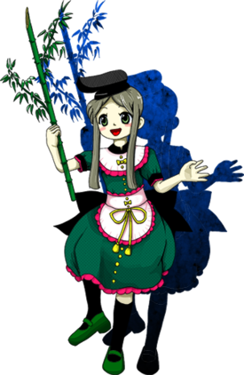

- Welcome to Touhou Wiki!
- Please register to edit. For assistance, check in with our Discord server or IRC channel.
Mai Teireida

|
Attention: This article is a stub and it needs expanding with more information related to the article's topic. If you can add to it in any way, please do so. |
Mai Teireida | |
|---|---|
|
 | |
| Species |
Human (?) |
| Abilities |
Drawing out people's vitality by dancing behind them |
| Occupation |
Servant of Okina Matara |
Music Themes | |
| |
Appearances | |
| Official Games | |
|
Hidden Star in Four Seasons (Stage 4 Midboss, Stage 5 Boss [alongside Satono], Extra Stage Midboss [alongside Satono]) | |
| Print Works | |
| |
Mai Teireida (丁礼田 舞 Teireida Mai) is a servant of Okina Matara, along with her partner Satono Nishida.
General Information[edit]
Mai appeared as the Stage 4 Midboss, Stage 5 Boss and Extra Stage Midboss in Hidden Star in Four Seasons.
Personality[edit]
She has little memory of her time as a human, but has retained her personality. She is a bit of a scatterbrain, but is quick to take action. She also holds the distinction of using boku to refer to herself. Still, she acts for Okina's sake alone, seemingly not having the free will to question otherwise.
Abilities[edit]
- Drawing out people's vitality by dancing behind them
Entrusted to Mai, it is not an ability of hers, but of her master, Okina. She draws out the latent ability in all things by dancing behind them, in this case vitality.
Background Information[edit]
Name[edit]
Design[edit]
Mai has reseda green hair, cut short with two long side locks, and pea colored eyes. She wears a Kazaori-eboshi, a smaller type of eboshi that has been folded. She wears a dotted dark green dress with short sleeves. Her sleves have a black cuff and rose lace. The bottom of the dress is also adorned with the same rose lace. Her dress has a black high neck collar, conected to a white bertha collar tipped with rose lace. She wears a white half appron fastened around her waist with the same rose lace. Theres a row of yellow buttons and bows along the front of her dress, starting at the bertha collar, overlapping the appron, down till the edge of the dress. On the bertha collar and appron theres one small yellow bow, and a big one lower on the appron that ends with tassels. She has black kneesocks and green shoes with short heels. She hold a bamboo stalk with her right hand. Mai's as well as Satono's design and pose is presumably based off the clothing and pose of the two servants of matarajin as seen in this woodblock print.
{kind=link}
Story[edit]
Games[edit]
- Hidden Star in Four Seasons
Emerging alongside their master, Okina, she orders her servants to find others worthy of serving her. To do so, they plant doors on the backs of others and empower them, to bring out their best and test them. What they don't know, however, is that they aren't searching for allies, like Okina told them, but for their own replacements.
Relationships[edit]
Okina is Mai and Satono's master. They are vessels of her power, acting as extensions of her and unflinchingly obeying her orders. They are becoming less human due to Okina's influence. They have little memory of their past, yet maintain their personality. Whether because they're no longer useful or she pities them, Okina seeks to replace them, which she has periodically. However, after failing to find successors, Okina says she is fine with retaining them. Satono and Mai do not know they are even searching for their own replacements.
Satono is a fellow servant under Okina.
Spell Cards[edit]
| Name | Translated | Comments | Games | Stage | ||
|---|---|---|---|---|---|---|
| Total: 11 | ||||||
| 竹符「バンブースピアダンス」 | Bamboo Sign "Bamboo Spear Dance" | HSiFS | St. 5: E/N | |||
| 竹符「バンブークレイジーダンス」 | Bamboo Sign "Bamboo Crazy Dance" | HSiFS | St. 5: H/L | |||
| 笹符「タナバタスターフェスティバル」 | Broadleaf Sign "Tanabata Star Festival" | HSiFS | St. 5: E/N/H/L | |||
| 舞符「ビハインドフェスティバル」 | Dance Sign "Behind Festival" | Co-owner with Satono | HSiFS | St. 5: E/N/H/L | ||
| 狂舞「テングオドシ」 | Mad Dance "Tengu-Odoshi" | Co-owner with Satono | HSiFS | St. 5: E/N | ||
| 狂舞「狂乱天狗怖し」 | Mad Dance "Frenzied Tengu-Frightening" | Co-owner with Satono | HSiFS | St. 5: H/L | ||
| 鼓舞「パワフルチアーズ」 | Drum Dance "Powerful Cheers" | Co-owner with Satono | HSiFS | St. Ex | ||
| 狂舞「クレイジーバックダンス」 | Mad Dance "Crazy Backup Dance" | Co-owner with Satono | HSiFS | St. Ex | ||
| 弾舞「二つ目の台風」 | Bullet Dance "Twin Typhoons" | Co-owner with Satono | HSiFS | St. Ex | ||
| 竹符「バンブーラビリンス」 | Bamboo Sign "Bamboo Labyrinth" | VD | Wrong Wednesday - 2 | |||
| 笹符「タナバタスタードリーム」 | Broadleaf Sign "Tanabata Star Dream" | VD | Wrong Wednesday - 4 | |||
Additional Information[edit]
- She is one of two characters to use the name Mai, along with PC-98's Mai.
- Mai is the only female bokkuko character in the series, using boku to refer to herself. This is a trait common in media of tomboys, but also of energetic, or socially unrefined characters who are unaware or uncaring of social norms.
- The silhouette of Mai, along with Satono Nishida and Okina Matara, appear on the jewel case for Hidden Star in Four Seasons.
- Satono and Mai are also the sole Windows-era non-final or extra bosses to appear alongside the final boss on the game's jewel case.
Fandom[edit]
Official Profiles[edit]
Official Sources[edit]
References[edit]
| This page is part of Project Characters, a Touhou Wiki project that aims to write proper descriptions for all official characters of Touhou Project. Please keep the character page guidelines in mind when contributing. |